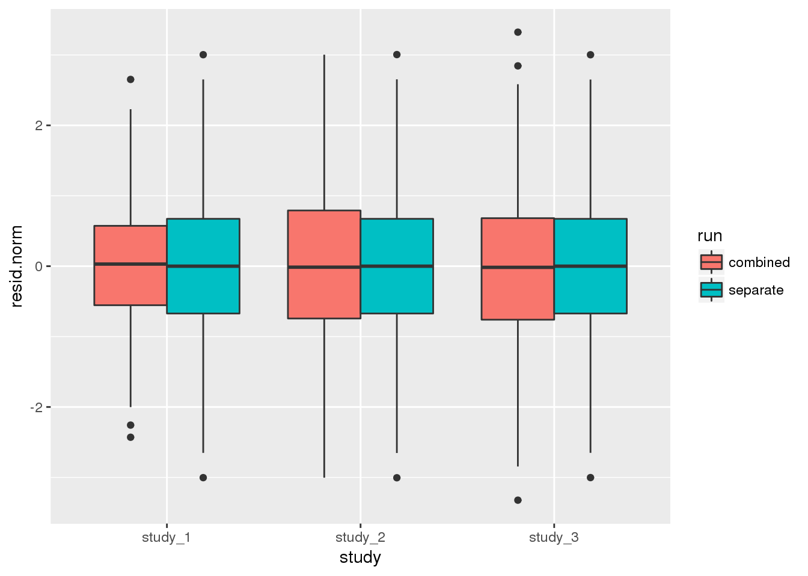

7 Association tests
Since TOPMed has many studies with related participants, we focus on linear mixed models. Logistic mixed models are also possible using GENESIS, see the GMMAT paper.
7.1 Null model
The first step in an association test is to fit the null model. We will need an AnnotatedDataFrame with phenotypes, and a GRM. We have a sample annotation with a sample.id column matched to the GDS file, and a phenotype file with subject_id. (In this example, we use the 1000 Genomes IDs for both sample and subject ID.) For TOPMed data, it is also important to match by study, as subject IDs are not unique across studies.
# sample annotation
workshop.path <- "https://github.com/UW-GAC/topmed_workshop_2018/raw/master"
sampfile <- "sample_annotation.RData"
if (!file.exists(sampfile)) download.file(file.path(workshop.path, sampfile), sampfile)
annot <- TopmedPipeline::getobj(sampfile)
library(Biobase)
head(pData(annot))## sample.id subject.id Population Population.Description sex
## 1 HG00096 HG00096 GBR British in England and Scotland M
## 2 HG00097 HG00097 GBR British in England and Scotland F
## 3 HG00099 HG00099 GBR British in England and Scotland F
## 4 HG00100 HG00100 GBR British in England and Scotland F
## 5 HG00101 HG00101 GBR British in England and Scotland M
## 6 HG00102 HG00102 GBR British in England and Scotland F
## status
## 1 0
## 2 1
## 3 0
## 4 1
## 5 0
## 6 0# phenotypes by subject ID
phenfile <- "phenotype_annotation.RData"
if (!file.exists(phenfile)) download.file(file.path(workshop.path, phenfile), phenfile)
phen <- TopmedPipeline::getobj(phenfile)
head(pData(phen))## subject_id sex age height study
## 1 HG00096 M 47 165.3 study_1
## 2 HG00102 F 49 169.1 study_1
## 3 HG00112 M 46 167.9 study_1
## 4 HG00114 M 49 169.5 study_1
## 5 HG00115 M 35 161.1 study_1
## 6 HG00116 M 37 182.2 study_1varMetadata(phen)## labelDescription
## subject_id subject identifier
## sex subject's sex
## age age at measurement of height
## height subject's height in cm
## study study identifier# merge sample annotation with phenotypes
library(dplyr)
dat <- pData(annot) %>%
left_join(pData(phen), by=c("subject.id"="subject_id", "sex"="sex"))
meta <- bind_rows(varMetadata(annot), varMetadata(phen)[3:5,,drop=FALSE])
annot <- AnnotatedDataFrame(dat, meta)
# load the GRM
data.path <- "https://github.com/UW-GAC/analysis_pipeline/raw/master/testdata"
grmfile <- "grm.RData"
if (!file.exists(grmfile)) download.file(file.path(data.path, grmfile), grmfile)
grm <- TopmedPipeline::getobj(grmfile)
# the row and column names of the covariance matrix must be set to sample.id
rownames(grm$grm) <- colnames(grm$grm) <- grm$sample.idWe will test for an association between genotype and height, adjusting for sex, age, and study as covariates. If the sample set involves multiple distinct groups with different variances for the phenotype, we recommend allowing the model to use heterogeneous variance among groups with the parameter group.var. We saw in a previous exercise that the variance differs by study.
library(GENESIS)
nullmod <- fitNullModel(annot, outcome="height", covars=c("sex", "age", "study"),
cov.mat=grm$grm, group.var="study", verbose=FALSE)We also recommend taking an inverse normal transform of the residuals and refitting the model. This is done separately for each group, and the transformed residuals are rescaled. See the full procedure in the
pipeline documenation.
7.2 Single-variant tests
Single-variant tests are the same as in GWAS. We use the assocTestSingle function in GENESIS. First, we have to create a SeqVarData object including both the GDS file and the sample annotation containing phenotypes. We then create a SeqVarBlockIterator object to iterate over blocks of variants.
library(SeqVarTools)
gdsfile <- "1KG_phase3_subset_chr1.gds"
if (!file.exists(gdsfile)) download.file(file.path(data.path, gdsfile), gdsfile)
gds <- seqOpen(gdsfile)
seqData <- SeqVarData(gds, sampleData=annot)
iterator <- SeqVarBlockIterator(seqData, verbose=FALSE)
assoc <- assocTestSingle(iterator, nullmod)## # of selected samples: 1,126head(assoc)## variant.id chr pos allele.index n.obs freq Score
## 1 1 1 970546 1 1126 0.0039964476 -0.11068049
## 2 2 1 985900 1 1126 0.0492895204 -1.23950276
## 3 3 1 1025045 1 1126 0.0004440497 -0.20902154
## 4 4 1 1265550 1 1126 0.0008880995 -0.09909574
## 5 5 1 1472676 1 1126 0.0071047957 0.25276727
## 6 6 1 1735725 1 1126 0.0022202487 -0.10587433
## Score.SE Score.Stat Score.pval
## 1 0.26797526 -0.4130250 0.67958828
## 2 0.74178030 -1.6709837 0.09472490
## 3 0.09040909 -2.3119527 0.02078029
## 4 0.09771638 -1.0141160 0.31052742
## 5 0.37957709 0.6659181 0.50546342
## 6 0.17644019 -0.6000579 0.54846765We make a QQ plot to examine the results.
library(ggplot2)
qqPlot <- function(pval) {
pval <- pval[!is.na(pval)]
n <- length(pval)
x <- 1:n
dat <- data.frame(obs=sort(pval),
exp=x/n,
upper=qbeta(0.025, x, rev(x)),
lower=qbeta(0.975, x, rev(x)))
ggplot(dat, aes(-log10(exp), -log10(obs))) +
geom_line(aes(-log10(exp), -log10(upper)), color="gray") +
geom_line(aes(-log10(exp), -log10(lower)), color="gray") +
geom_point() +
geom_abline(intercept=0, slope=1, color="red") +
xlab(expression(paste(-log[10], "(expected P)"))) +
ylab(expression(paste(-log[10], "(observed P)"))) +
theme_bw()
}
qqPlot(assoc$Score.pval)
7.3 Exercises
- Logistic regression:
fitNullModelcan use a binary phenotype as the outcome variable by specifying the argumentfamily=binomial. Use thestatuscolumn in the sample annotation to fit a null model for simulated case/control status, withsexandPopulationas covariates. Refer to the documentation forfitNulModelto see what other parameters need to be changed for a binary outcome. Then run a single-variant test using this model.
nullmod.status <- fitNullModel(annot, outcome="status", covars=c("sex", "Population"),
cov.mat=grm$grm, family=binomial, verbose=FALSE)
seqResetFilter(seqData, verbose=FALSE)
iterator <- SeqVarBlockIterator(seqData, verbose=FALSE)
assoc <- assocTestSingle(iterator, nullmod.status, test="Score")## # of selected samples: 1,126head(assoc)## variant.id chr pos allele.index n.obs freq Score
## 1 1 1 970546 1 1126 0.0039964476 0.20297260
## 2 2 1 985900 1 1126 0.0492895204 -2.63528215
## 3 3 1 1025045 1 1126 0.0004440497 -0.09788685
## 4 4 1 1265550 1 1126 0.0008880995 0.81055788
## 5 5 1 1472676 1 1126 0.0071047957 0.63907684
## 6 6 1 1735725 1 1126 0.0022202487 -0.45986600
## Score.SE Score.Stat Score.pval
## 1 0.8333773 0.2435543 0.80757604
## 2 2.6406893 -0.9979524 0.31830245
## 3 0.2944788 -0.3324071 0.73958188
## 4 0.4079077 1.9871110 0.04691009
## 5 1.0775580 0.5930788 0.55312840
## 6 0.6352752 -0.7238847 0.46913653- Inverse normal transform: use the function
nullModelInvNormto perform an inverse normal transform on theheightvariable. For each study separately, compute a null model and do the inverse normal transform using just the values for that study. Compare these residuals with the initial residuals you obtained for that study by transforming all studies together.
nullmod.norm.all <- nullModelInvNorm(nullmod, cov.mat=grm$grm, norm.option="all")## [1] 5.426533e+01 4.280310e+01 1.165095e+02 9.808945e+01 -1.603237e+03
## [6] 7.550181e-03
## [1] 3.410792e+01 3.584897e+01 8.954492e+01 7.624706e+01 -1.603138e+03
## [6] 1.035647e-02
## [1] 2.396106e+01 2.656835e+01 4.184204e+01 3.859662e+01 -1.589464e+03
## [6] 1.687874e-02
## [1] 13.2491648 16.9373053 20.2505893 18.9509796 -1586.8577254
## [6] 0.0311776
## [1] 6.261202e-02 1.472786e+00 4.156538e-01 4.398434e-01 -1.667973e+03
## [6] 1.553884e+00
## [1] 0.1502457 0.4474393 0.5757750 0.5944981 -1591.7256219
## [6] 1.4305344
## [1] 0.2764169 0.5476046 0.6540029 0.6438323 -1587.8624868
## [6] 1.1050621
## [1] 0.3788940 0.5650763 0.6354999 0.6027325 -1586.7797445
## [6] 1.0118797
## [1] 0.4009141 0.5618423 0.6268258 0.5894059 -1586.7486905
## [6] 1.0002449
## [1] 0.4014081 0.5613116 0.6270659 0.5891437 -1586.7486447
## [6] 1.0000002
## [1] 0.4014424 0.5612675 0.6270502 0.5891168 -1586.7486446
## [6] 1.0000000
## [1] 0.4014438 0.5612652 0.6270502 0.5891156 -1586.7486446
## [6] 1.0000000
## [1] 0.4014439 0.5612651 0.6270501 0.5891155 -1586.7486446
## [6] 1.0000000dat.all <- data.frame(sample.id=nullmod.norm.all$sample.id,
resid.norm=nullmod.norm.all$resid.marginal,
study=annot$study,
run="combined")
nullmod.norm.group <- nullModelInvNorm(nullmod, cov.mat=grm$grm, norm.option="by.group")## [1] 5.426533e+01 4.280310e+01 1.165095e+02 9.808945e+01 -1.603282e+03
## [6] 7.550782e-03
## [1] 3.410783e+01 3.584937e+01 8.954476e+01 7.624651e+01 -1.603095e+03
## [6] 1.035568e-02
## [1] 2.381328e+01 2.675677e+01 4.188200e+01 3.854148e+01 -1.589110e+03
## [6] 1.688561e-02
## [1] 1.314292e+01 1.711312e+01 2.027537e+01 1.891724e+01 -1.586415e+03
## [6] 3.118595e-02
## [1] 8.468674e-02 1.482857e+00 3.925956e-01 4.194635e-01 -1.668069e+03
## [6] 1.544911e+00
## [1] 0.1798233 0.3693854 0.5469337 0.5675795 -1592.4318992
## [6] 1.4789592
## [1] 0.2965849 0.4915445 0.6366946 0.6250394 -1587.7319467
## [6] 1.1236269
## [1] 0.3823806 0.5525549 0.6327231 0.5971163 -1586.3518912
## [6] 1.0156283
## [1] 0.3993051 0.5657771 0.6265088 0.5870741 -1586.3023605
## [6] 1.0004057
## [1] 0.3991862 0.5666070 0.6268995 0.5872827 -1586.3023287
## [6] 1.0000003
## [1] 0.3991706 0.5666290 0.6268996 0.5873005 -1586.3023286
## [6] 1.0000000
## [1] 0.3991697 0.5666302 0.6268999 0.5873013 -1586.3023286
## [6] 1.0000000
## [1] 0.3991697 0.5666303 0.6268999 0.5873014 -1586.3023286
## [6] 1.0000000dat.group <- data.frame(sample.id=nullmod.norm.group$sample.id,
resid.norm=nullmod.norm.group$resid.marginal,
study=annot$study,
run="separate")
dat <- rbind(dat.all, dat.group)
ggplot(dat, aes(study, resid.norm, fill=run)) + geom_boxplot()
dat %>%
group_by(study, run) %>%
summarise(mean=mean(resid.norm), var=var(resid.norm))## # A tibble: 6 x 4
## # Groups: study [?]
## study run mean var
## <fct> <fct> <dbl> <dbl>
## 1 study_1 combined 0.000354 1.00
## 2 study_1 separate 0.00121 0.999
## 3 study_2 combined 0.000932 1.00
## 4 study_2 separate 0.000816 0.999
## 5 study_3 combined -0.00129 1.000
## 6 study_3 separate -0.00203 0.9997.4 Sliding window tests
For rare variants, we can do burden tests or SKAT using the GENESIS function assocTestSeqAggregate. We restrict the test to variants with alternate allele frequency < 0.1. (For real data, this threshold would be lower.) We use a flat weighting scheme. We define a sliding window across the genome using a SeqVarWindowIterator.
seqResetFilter(seqData, verbose=FALSE)
iterator <- SeqVarWindowIterator(seqData, windowSize=5000, windowShift=2000, verbose=FALSE)
assoc <- assocTestAggregate(iterator, nullmod, test="Burden", AF.max=0.1, weight.beta=c(1,1))## # of selected samples: 1,126names(assoc)## [1] "results" "variantInfo"head(assoc$results)## chr start end n.site n.alt n.sample.alt Score Score.SE
## 1 1 966001 971000 1 9 9 -0.11068049 0.26797526
## 2 1 982001 987000 1 111 107 -1.23950276 0.74178030
## 3 1 1022001 1027000 1 1 1 -0.20902154 0.09040909
## 4 1 1262001 1267000 1 2 2 -0.09909574 0.09771638
## 5 1 1468001 1473000 1 16 16 0.25276727 0.37957709
## 6 1 1732001 1737000 1 5 5 -0.10587433 0.17644019
## Score.Stat Score.pval
## 1 -0.4130250 0.67958828
## 2 -1.6709837 0.09472490
## 3 -2.3119527 0.02078029
## 4 -1.0141160 0.31052742
## 5 0.6659181 0.50546342
## 6 -0.6000579 0.54846765head(assoc$variantInfo)## [[1]]
## variant.id chr pos allele.index n.obs freq weight
## 1 1 1 970546 1 1126 0.003996448 1
##
## [[2]]
## variant.id chr pos allele.index n.obs freq weight
## 1 2 1 985900 1 1126 0.04928952 1
##
## [[3]]
## variant.id chr pos allele.index n.obs freq weight
## 1 3 1 1025045 1 1126 0.0004440497 1
##
## [[4]]
## variant.id chr pos allele.index n.obs freq weight
## 1 4 1 1265550 1 1126 0.0008880995 1
##
## [[5]]
## variant.id chr pos allele.index n.obs freq weight
## 1 5 1 1472676 1 1126 0.007104796 1
##
## [[6]]
## variant.id chr pos allele.index n.obs freq weight
## 1 6 1 1735725 1 1126 0.002220249 1qqPlot(assoc$results$Score.pval)
For SKAT, we use the Wu weights.
seqResetFilter(seqData, verbose=FALSE)
iterator <- SeqVarWindowIterator(seqData, windowSize=5000, windowShift=2000, verbose=FALSE)
assoc <- assocTestAggregate(iterator, nullmod, test="SKAT", AF.max=0.1, weight.beta=c(1,25))## # of selected samples: 1,126head(assoc$results)## chr start end n.site n.alt n.sample.alt Q_0 pval_0 err_0
## 1 1 966001 971000 1 9 9 6.317493 0.67958828 0
## 2 1 982001 987000 1 111 107 84.857944 0.09472490 0
## 3 1 1022001 1027000 1 1 1 26.730269 0.02078029 0
## 4 1 1262001 1267000 1 2 2 5.881232 0.31052742 0
## 5 1 1468001 1473000 1 16 16 28.358648 0.50546342 0
## 6 1 1732001 1737000 1 5 5 6.296893 0.54846765 0head(assoc$variantInfo)## [[1]]
## variant.id chr pos allele.index n.obs freq weight
## 1 1 1 970546 1 1126 0.003996448 22.70917
##
## [[2]]
## variant.id chr pos allele.index n.obs freq weight
## 1 2 1 985900 1 1126 0.04928952 7.431881
##
## [[3]]
## variant.id chr pos allele.index n.obs freq weight
## 1 3 1 1025045 1 1126 0.0004440497 24.73493
##
## [[4]]
## variant.id chr pos allele.index n.obs freq weight
## 1 4 1 1265550 1 1126 0.0008880995 24.47255
##
## [[5]]
## variant.id chr pos allele.index n.obs freq weight
## 1 5 1 1472676 1 1126 0.007104796 21.06793
##
## [[6]]
## variant.id chr pos allele.index n.obs freq weight
## 1 6 1 1735725 1 1126 0.002220249 23.70132qqPlot(assoc$results$pval_0)
7.4.1 Exercise
Repeat the previous exercise on logistic regression, this time running a sliding-window test.
nullmod.status <- fitNullModel(annot, outcome="status", covars=c("sex", "Population"),
cov.mat=grm$grm, family=binomial, verbose=FALSE)
seqResetFilter(seqData, verbose=FALSE)
iterator <- SeqVarWindowIterator(seqData, windowSize=5000, windowShift=2000, verbose=FALSE)
assoc <- assocTestAggregate(iterator, nullmod, test="SKAT", AF.max=0.1, weight.beta=c(1,25))## # of selected samples: 1,126head(assoc$results)## chr start end n.site n.alt n.sample.alt Q_0 pval_0 err_0
## 1 1 966001 971000 1 9 9 6.317493 0.67958828 0
## 2 1 982001 987000 1 111 107 84.857944 0.09472490 0
## 3 1 1022001 1027000 1 1 1 26.730269 0.02078029 0
## 4 1 1262001 1267000 1 2 2 5.881232 0.31052742 0
## 5 1 1468001 1473000 1 16 16 28.358648 0.50546342 0
## 6 1 1732001 1737000 1 5 5 6.296893 0.54846765 07.5 Annotation-based aggregate tests
Note: the code and libraries in this section are under active development, and are not production-level. It is provided to give workshop participants an example of some of the kinds of analysis tasks that might be performed with TOPMed annotation data. Use the code at your own risk, and be warned that it may break in unexpected ways. Github issues and contributions are welcome!
Analysts generally aggregate rare variants for association testing to decrease multiple testing burden and increase statistical power. They can group variants that fall within arbitrary ranges (such as sliding-windows), or they can group variants with intent. For example, an analyst could aggregate variants that that fall between transcription start sites and stop sites, within coding regions, within regulatory regions, or other genomic features selected from sources like published gene models or position- or transcript-based variant annotation. An analyst could also choose to filter the variants prior or subsequent to aggregation using annotation-based criteria such as functional impact or quality scores.
To demonstrate, we will aggregate a subset of TOPMed variants from chromosome 22. The subset is a portion of TOPMed SNP and indel variants that are also in the 1000 Genomes Project. We will parse an example variant annotation file to select fields of interest, parse a GENCODE .gtf file to define our genic units, and then aggregate the selected variants into the defined genic units.
7.5.1 Working with variant annotation
Variants called from the TOPMed data set are annotated using the Whole Genome Sequence Annotator (WGSA). WGSA output files include 359 annotation fields, some of which are themselves lists of annotation values. Thus, individual variants may be annotated with more than 1000 individual fields. WGSA produces different output files for different featues. TOPMed variant annotation includes separate files for SNPs and for indels. The subsetted variant annotation files we will use for this example are available via github:
ben.workshop.path <- "https://github.com/bheavner/topmed_workshop_2017_bh/raw/master"
snpfile <- "snp.tsv.gz"
if (!file.exists(snpfile)) download.file(file.path(ben.workshop.path, snpfile), snpfile)
indelfile <- "indel.tsv.gz"
if (!file.exists(indelfile)) download.file(file.path(ben.workshop.path, indelfile), indelfile)The WGSA output files are tab-separated text files, with one line per annotated variant. Since there are many annotation fields, these files can be unwieldy to work with directly. As an example, the first two lines of the SNP variant annotation file can be previewed within R:
readLines("snp.tsv.gz", n=2)The DCC has begun an R package, wgsaparsr, to begin working with WGSA output files. This package is under development, and is available on github at https://github.com/UW-GAC/wgsaparsr. For now, the package can be installed from github using the devtools package:
#library(devtools)
#devtools::install_github("UW-GAC/wgsaparsr@1.0.0.9003")
library(wgsaparsr)
#library(tidyverse) # just in case it's not loaded yet
library(tibble)
library(dplyr)
library(tidyr)
library(readr)wgsaparsr includes a get_fields() function to list the annotation fields available in a WGSA output file:
# list all fields in an annotation file:
get_fields("snp.tsv.gz")Only a subset of these annotations may be necessary for a particular association test, and it is unweildy to work with all of them, so it is useful to process the WGSA output file to select fields of interest. The wgsaparsr function parse_to_file() allows field selection by name.
An additional complication in working with the WGSA output files is that some of the annotation fields are transcript-based, rather than position-based. Thus, if a variant locus is within multiple transcripts, those fields will have multiple entries (often separated by a | character). For example, annotation fields such as VEP_ensembl_Transcript_ID may have many values within a single tab-separated field.
wgsaparsr::parse_to_file() addresses this by splitting such list-fields into multiple rows. Other annotation fields for that variant are duplicated, and associated columns are filled with the same value for each transcript that a particular variant falls within. A consequence of this approach is that the processed annotation file has more lines than the WGSA output file. In freeze 4, processing expanded the annotation by a factor of about 5 - the 220 million annotations result in a 1-billion row database for subsequent aggregation.
wgsaparsr::parse_to_file() reads a snp annotation file, selects specified fields, and expands user-defined transcript-level annotation fields. It produces a tab-separated output file for subsequent analysis.
desired_columns <-
c(
"`#chr`", #NOTE: backtics on #chr because it starts with special character!
"pos",
"ref",
"alt",
"rs_dbSNP147",
# "CADDphred",
"CADD_phred", #NOTE: different than the indel annotation file.
"VEP_ensembl_Transcript_ID",
"VEP_ensembl_Gene_Name",
"VEP_ensembl_Gene_ID",
"VEP_ensembl_Consequence",
"VEP_ensembl_Amino_Acid_Change",
"VEP_ensembl_LoF",
"VEP_ensembl_LoF_filter",
"VEP_ensembl_LoF_flags",
"VEP_ensembl_LoF_info"
# "1000Gp3_AF" #skipped for the workshop because code doesn't work with this variable name
)
to_split <-
c(
"VEP_ensembl_Consequence",
"VEP_ensembl_Transcript_ID",
"VEP_ensembl_Gene_Name",
"VEP_ensembl_Gene_ID",
"VEP_ensembl_Amino_Acid_Change",
"VEP_ensembl_LoF",
"VEP_ensembl_LoF_filter",
"VEP_ensembl_LoF_flags",
"VEP_ensembl_LoF_info"
)
parse_to_file("snp.tsv.gz", "parsed_snp.tsv", desired_columns, to_split, verbose = TRUE)Although the output file has fewer columns than the the raw WGSA output file, this .tsv file is not particularly nice to work with in R:
readLines("parsed_snp.tsv", n=2)However, get_fields() does work on the parsed file to view available fields:
# list all fields in an annotation file:
get_fields("parsed_snp.tsv")The WGSA output files for indel variants differs from the output for SNPs. Some of the field names differ slightly (e.g. “CADDphred” instead of “CADD_phred”), and there are some fields of interest that include feature counts in brackets (e.g. ENCODE_Dnase_cells includes fields like 125{23}). Thus, (for now) wgsaparsr includes parse_indel_to_file(). parse_indel_to_file() is very similar to parse_to_file(), and will likely be incorporated to that function in the near future. The syntax for parse_indel_to_file() is the same as parse_to_file():
desired_columns_indel <-
c(
"`#chr`", #NOTE: backtics on #chr because it starts with special character!
"pos",
"ref",
"alt",
"rs_dbSNP147",
"CADDphred",
# "CADD_phred", #NOTE: different than the general annotation file.
"VEP_ensembl_Transcript_ID",
"VEP_ensembl_Gene_Name",
"VEP_ensembl_Gene_ID",
"VEP_ensembl_Consequence",
"VEP_ensembl_Amino_Acid_Change",
"VEP_ensembl_LoF",
"VEP_ensembl_LoF_filter",
"VEP_ensembl_LoF_flags",
"VEP_ensembl_LoF_info"
# "1000Gp3_AF"#skipped for the workshop because code doesn't work with this variable name
)
parse_indel_to_file("indel.tsv.gz", "parsed_indel.tsv", desired_columns_indel, to_split, verbose = TRUE)Inspection shows that the output format is the same for this function:
readLines("parsed_indel.tsv", n=2)Or as a list,
# list all fields in an annotation file:
get_fields("parsed_indel.tsv")If an analyst wished to filter the list of variants prior to aggregation, the processing code could be modified to apply filters during parsing, or the annotation file could be reprocessed to apply filters at this point. Alternatively, filters can also be applied subsequent to aggregation.
As insurance for this exercise, the parsed files are also available on github:
ben.workshop.path <- "https://github.com/bheavner/topmed_workshop_2017_bh/raw/master"
parsedsnpfile <- "parsed_snp.tsv"
if (!file.exists(parsedsnpfile)) download.file(file.path(ben.workshop.path, parsedsnpfile), parsedsnpfile)
parsedindelfile <- "parsed_indel.tsv"
if (!file.exists(parsedindelfile)) download.file(file.path(ben.workshop.path, parsedindelfile), parsedindelfile)7.5.2 Defining “gene” ranges for aggregation
Aggregation requires definition of the desired aggregation units. As a relatively simple example, we will build a list of genomic ranges corresponding to genes as defined by the GENCODE Project.
The GENCODE Project’s Genomic ENCylopedia Of DNA Elements is available in the well-documented .gtf file format. Generally, .gtf files consist of 9 tab-separated fields, some of which may consist of various numbers of key:value pairs.
The DCC has begun an R package, genetable, to parse and work with .gtf files. This package is under development, and is available on github at https://github.com/UW-GAC/genetable. For now, the package can be installed from github using the devtools package:
#library(devtools)
#devtools::install_github("UW-GAC/genetable")
library(genetable)I’ll be working with the gencode release 19 because it’s the last one on GRCh37. The file can be downloaded via https://www.gencodegenes.org/releases/19.html.
In this case, I’ve trimmed the gencode file to include only chromosome 22 feature definitions (since that’s the variant annotation set I’m using for the demo).
gtffile <- "chr22.gtf.gz"
if (!file.exists(gtffile)) download.file(file.path(ben.workshop.path, gtffile), gtffile)
gtf_source <- "chr22.gtf.gz"The details of the genetable package are of less interest for this workshop, so we’ll just use it - we can import and tidy the .gtf file:
# import the gtf file to a tidy data frame (a tibble)
gtf <- import_gencode(gtf_source)
# look at the tibble
glimpse(gtf)We can see that genomic features are tagged by feature type:
# summarize the number of features by tag.
summarize_tag(gtf, tag = "basic")And we can use these feature type tags to filter the .gtf annotation to extract the starting and ending genomic positions for features of interest, such as features tagged “gene”:
# filter gtf file to return transcript features tagged basic
basic_transcripts <- filter_gencode(gtf, featurearg = "transcript", tagarg = "basic")
# or filter for features == "gene"
genes <- filter_gencode(gtf, featurearg = "gene")
# define the boundaries of the feature of interest
# this can be slow for complicated features
#gene_bounds <- define_boundaries(basic_transcripts, "gene_id")
gene_bounds <- define_boundaries(genes, "gene_id")
# can check the resulting tibble for sanity
glimpse(gene_bounds)Finally, genetable includes a function to save a self-documented tab separated file containing the filtered .gtf results:
# save to file
note <- 'This file includes starting and ending ranges for feature = "gene" in the gtf file.'
save_to_file(gene_bounds, notes = note) # will automatically make file called feature_bounds_DATE.tsvAs insurance for this exercise, the genic range definitions that I made last week are also available on github:
ben.workshop.path <- "https://github.com/bheavner/topmed_workshop_2017_bh/raw/master"
boundsfile <- "feature_bounds_20170804.tsv"
if (!file.exists(boundsfile)) download.file(file.path(ben.workshop.path, boundsfile), boundsfile)7.5.3 Aggregating TOPMed variants into genic units
Now we’ve generated a set of variants with a manaageable number of annotation fields, and defined the desired aggregation units as sets of genomic ranges. The set of variants may be filtered using the annotation fields we’ve chosen (our list is unfiltered in this example).
We’re ready to aggregate the variants by genic units. As insurance, we can start with the same set of inputs by downloading what I generated last week:
ben.workshop.path <- "https://github.com/bheavner/topmed_workshop_2017_bh/raw/master"
parsed_snp_file <- "parsed_snp.tsv"
parsed_indel_file <- "parsed_indel.tsv"
unit_defs_file <- "feature_bounds_20170804.tsv"
if (!file.exists(parsed_snp_file)) download.file(file.path(ben.workshop.path, parsed_snp_file), parsed_snp_file)
if (!file.exists(parsed_indel_file)) download.file(file.path(ben.workshop.path, parsed_indel_file), parsed_indel_file)
if (!file.exists(unit_defs_file)) download.file(file.path(ben.workshop.path, unit_defs_file), unit_defs_file)Load the tab-separated files to tibbles (data frames) to work with:
snps <- read_tsv(parsed_snp_file, comment = "#")
indels <- read_tsv(parsed_indel_file, comment = "#")
unit_defs <- read_tsv(unit_defs_file, comment = "#", skip = 1)
unit_defs <- select(unit_defs, c(gene_id, agg_start, agg_end))There’s probably a nice, fast, vectorized to accomplish this task, but for demonstration purposes, we’ll just loop over the unit_defs and select indels and snps within the genomic ranges of interest:
# make an empty tibble
foo <- tibble(group_id="", chromosome="", position="", ref="", alt="") %>%
filter(length(group_id)>1)
# loop over unit defs
for (rowIndex in 1:nrow(unit_defs)) {
# select snps and insert to foo ## SNPs could be filtered here
snpsToAdd <- select(snps, c(chr, pos, ref, alt)) %>%
dplyr::filter(between(pos, unit_defs[rowIndex,]$agg_start, unit_defs[rowIndex,]$agg_end)) %>% # This is the line to vectorize
distinct() %>%
mutate(group_id = unit_defs[rowIndex,]$gene_id)
if (nrow(snpsToAdd) > 0) {
foo <- add_row(
foo,
group_id = snpsToAdd$group_id,
chromosome = snpsToAdd$chr,
position = snpsToAdd$pos,
ref = snpsToAdd$ref,
alt = snpsToAdd$alt
)
}
# select indels and insert to foo ## Indels could be filtered here, too
toAdd <- select(indels, c(chr, pos, ref, alt)) %>%
dplyr::filter(between(pos, unit_defs[rowIndex, ]$agg_start, unit_defs[rowIndex, ]$agg_end)) %>% # to vectorize
distinct() %>%
mutate(group_id = unit_defs[rowIndex, ]$gene_id)
if (rowIndex %% 10 == 0){
message(
paste0("row: ", rowIndex,
" snps to add: ", nrow(snpsToAdd),
" indels to add: ", nrow(toAdd)))
}
if (nrow(toAdd) > 0) {
foo <- add_row(
foo,
group_id = toAdd$group_id,
chromosome = toAdd$chr,
position = toAdd$pos,
ref = toAdd$ref,
alt = toAdd$alt
)
}
}
aggregated_variants <- distinct(foo)That may not be fast or pretty, but we’ve now got a set of variants aggregated into genic units using the GENCODE gene model! This set can be saved and used with the analysis pipeline for association testing.
We can inspect the tibble with glimpse:
glimpse(aggregated_variants)We can do things like counting how many genic units we’re using:
distinct(as.tibble(aggregated_variants$group_id))We can look at number of variants per aggregation unit:
counts <- aggregated_variants %>% group_by(group_id) %>% summarize(n())Feel free to look at other summary statistics and do other exploratory data analysis as you’d like, but don’t forget to save it if you’d like to use it for the analysis pipeline!
save(aggregated_variants, file = "chr22_gene_aggregates.RDA")7.5.4 Aggregate unit for association testing exercise
We will be using a slightly different gene-based aggregation unit for the assocation testing exercise. As before, this analysis uses a subset of the TOPMed SNP variants that are present in the 1000 Genomes Project. However, in this exercise, the genic units include TOPMed SNP variants from all chromosomes (no indels, and not just chromosome 22 as before). Further, each genic unit is expanded to include the set of TOPMed SNP variants falling within a GENCODE-defined gene along with 20 kb flanking regions upstream and downstream of that range.
In a larger-scale analysis of TOPMed data, aggregation units could include both TOPMed SNP and indel variants falling within defined aggregation units, and would not be restricted to the variants also present in this chosen subset of the 1000 Genomes Project. An analyst might also choose to filter variants within each unit based on various annotations (examples include loss of function, conservation, deleteriousness scores, etc.).
As before, the aggregation units are defined in an R dataframe. Each row of the dataframe specifies a variant (chromosome, position, ref, alt) and the group identifier (group_id) assigned to it. Mutiple rows with different group identifiers can be specified to assign a variant to different groups (for example a variant can be assigned to mutiple genes).
aggfile <- "variants_by_gene.RData"
if (!file.exists(aggfile)) download.file(file.path(workshop.path, aggfile), aggfile)
aggunit <- TopmedPipeline::getobj(aggfile)
names(aggunit)
head(aggunit)
# an example of variant that is present in mutiple groups
library(dplyr)
mult <- aggunit %>%
group_by(chr, pos) %>%
summarise(n=n()) %>%
filter(n > 1)
inner_join(aggunit, mult[2,1:2])7.5.5 Association testing with aggregate units
We can run a burden test or SKAT on each of these units using assocTestAggregate. We define a SeqVarListIterator object where each list element is an aggregate unit. The constructor expects a GRangesList, so we use the TopmedPipeline function aggregateGRangesList to quickly convert our single dataframe to the required format. This function can account for multiallelic variants (the same chromosome, position, and ref, but different alt alleles).
library(TopmedPipeline)
aggVarList <- aggregateGRangesList(aggunit)
length(aggVarList)
head(names(aggVarList))
aggVarList[[1]]
seqResetFilter(seqData, verbose=FALSE)
iterator <- SeqVarListIterator(seqData, variantRanges=aggVarList, verbose=FALSE)As in the previous section, we must fit the null model before running the association test.
assoc <- assocTestAggregate(iterator, nullmod, test="Burden", AF.max=0.1, weight.beta=c(1,1))
names(assoc)
head(assoc$results)
head(names(assoc$variantInfo))
head(assoc$variantInfo[[1]])
qqPlot(assoc$results$Score.pval)7.5.6 Exercise
Since we are working with a subset of the data, many of the genes listed in group_id have a very small number of variants. Create a new set of units based on position rather than gene name, using the TopmedPipeline function aggregateGRanges. Then run SKAT using those units and a SeqVarRangeIterator.
agg2 <- aggunit %>%
mutate(chr=factor(chr, levels=c(1:22, "X"))) %>%
select(chr, pos) %>%
distinct() %>%
group_by(chr) %>%
summarise(min=min(pos), max=max(pos))
head(agg2)
aggByPos <- bind_rows(lapply(1:nrow(agg2), function(i) {
data.frame(chr=agg2$chr[i],
start=seq(agg2$min[i], agg2$max[i]-1e6, length.out=10),
end=seq(agg2$min[i]+1e6, agg2$max[i], length.out=10))
})) %>%
mutate(group_id=1:n())
head(aggByPos)
aggVarList <- aggregateGRanges(aggByPos)
aggVarList[1:2]
seqResetFilter(seqData, verbose=FALSE)
iterator <- SeqVarRangeIterator(seqData, variantRanges=aggVarList, verbose=FALSE)
assoc <- assocTestAggregate(iterator, nullmod, test="SKAT", AF.max=0.1, weight.beta=c(1,25))
head(assoc$results)seqClose(gds)